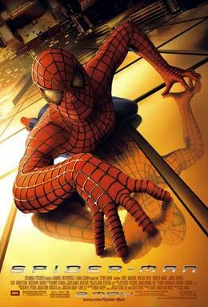
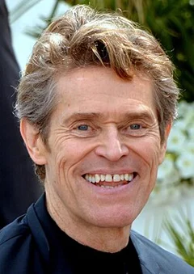
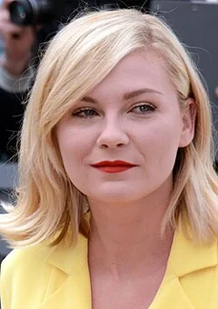
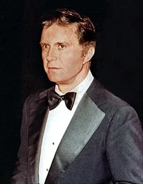
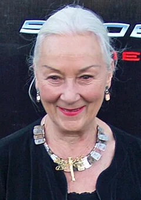
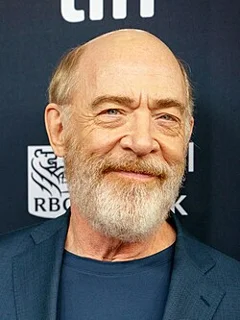

Spider-Man (2002)
| Movie | Release Date | Poster |
|---|---|---|
| Spider-Man PG-13 · 2h 1m · science fiction · drama · coming-of-age |  |
| Trailer |
|---|
| Rotten Tomatoes | Metacritic | IMDb |
|---|---|---|
| 90% | 73/100 | View on IMDb |
| Overview |
|---|
Spider-Man is a 2002 American superhero film directed by Sam Raimi and written by David Koepp. Based on the Marvel Comics character Spider-Man, it is the first film in Raimi's Spider-Man trilogy (2002–2007), and stars Tobey Maguire, Willem Dafoe, Kirsten Dunst, James Franco, Cliff Robertson, and Rosemary Harris. The plot follows the timid teenager Peter Parker (Maguire), who gains superhuman abilities after being bitten by a genetically engineered spider. He adopts the masked persona "Spider-Man" and begins to fight crime in New York City, facing the malevolent Green Goblin (Dafoe) in the process. Full plot (spoilers)On a high school field trip, Peter Parker visits a Columbia University genetics laboratory with his best friend, Harry Osborn , and his crush, Mary Jane Watson . There, he is bitten by a genetically engineered spider, and falls ill upon returning home. Meanwhile, Harry's father Norman tests a performance-enhancing chemical on himself in an attempt to secure a military contract for Oscorp , the company he founded. The chemical gives him superhuman strength but causes him to go insane and kill one of his scientists. The next day, Peter develops spider-like abilities, including enhanced strength, senses, agility, and speed; organic webbing in his wrists; and the ability to cling to walls. Hoping to buy a car to impress Mary Jane, Peter enters an underground wrestling event and wins his match, but is swindled out of his earnings. When the wrestling organizer is robbed, a bitter Peter steps out of the way, allowing the thief to escape. Soon after, Peter's Uncle Ben is killed by the same thief. Peter pursues the thief, who eventually falls to his death. Meanwhile, a crazed Norman sabotages a product test by an Oscorp rival and kills several people. Upon graduating, Peter begins using his abilities to fight crime, donning a costume and adopting the alias Spider-Man . J. Jonah Jameson , the publisher of the Daily Bugle newspaper, hires Peter as a freelance photographer, since he can provide high-quality images of Spider-Man. When Oscorp's board of directors decides to oust Norman and sell the company, Norman uses a disguise to assassinate them during the Unity Day festival. As Spider-Man, Peter fends off Norman and rescues Mary Jane. Afterwards, Jameson bestows the name " Green Goblin " upon the mysterious masked killer. Norman offers Peter a place at his side, but Peter refuses. They fight, and Peter flees after being wounded. Peter's aunt May invites Mary Jane, Harry, and Norman for Thanksgiving dinner. Norman notices Peter's injury and deduces that he is Spider-Man. Later, Norman attacks and injures May, who is hospitalized. Peter is still unaware of the Goblin's identity, but realizes that the Goblin is targeting his loved ones. While visiting the hospital, Mary Jane confesses to Peter her infatuation with Spider-Man, who has rescued her twice. Harry, who is dating Mary Jane, sees her holding Peter's hand and assumes she has feelings for him. A distraught Harry tells his father about Peter's infatuation with Mary Jane. That night, Norman captures Mary Jane and a Roosevelt Island Tramway car full of children. He tells Peter to choose whom to rescue, then drops them both from the Queensboro Bridge . Peter saves everyone, then lowers them onto a nearby barge for safety. An enraged Norman throws Peter into a nearby abandoned building, then brutally beats him. After Norman reveals his intentions to kill Mary Jane, Peter finds the strength to fight back. Norman reveals his identity and begs forgiveness, discreetly preparing to impale Peter with his glider. Warned by his spider-sense, Peter dodges the attack, and the glider fatally skewers Norman instead. Before dying, Norman begs Peter not to reveal his identity to Harry . Peter takes Norman's body to the Osborn house, where Harry confronts him, but Peter escapes. At Norman's funeral, Harry vows revenge on Spider-Man, who he mistakenly believes killed his father. Mary Jane then confesses to Peter that she loves him. However, Peter feels he must protect her from his enemies, so he hides his true feelings and tells her they can only be friends. As Peter leaves, he recalls his uncle's words: " With great power comes great responsibility ." |
| Actor | Character | Photo |
|---|---|---|
| Tobey Maguire | Peter Parker / Spider-Man A high school student who is bitten by a genetically engineered spider. | No photo |
| Willem Dafoe | Norman Osborn / Green Goblin A scientist who becomes a costumed terrorist after injecting himself with a chemical formula. |  |
| Kirsten Dunst | Mary Jane Watson Peter's love interest, who is dating Harry. |  |
| James Franco | Harry Osborn Peter's best friend, Mary Jane's boyfriend, and Norman's son. | |
| Cliff Robertson | Ben Parker Peter's paternal uncle. |  |
| Rosemary Harris | May Parker Peter's paternal aunt. |  |
| J. K. Simmons | J. Jonah Jameson The Daily Bugle publisher, who considers Spider-Man a menace. |  |
| Elizabeth Banks | Betty Brant | No photo |
| Joe Manganiello | Flash Thompson | No photo |
| Bill Nunn | Robbie Robertson | No photo |
| Ted Raimi | Ted Hoffman | No photo |
| Gerry Becker | – | No photo |
| Ron Perkins | – | No photo |
| Randy Savage | Bonesaw McGraw | No photo |
| Macy Gray | – | No photo |
| Bruce Campbell | – | No photo |
| Lucy Lawless | – | No photo |
| Stan Lee | – | No photo |
| Octavia Spencer | – | No photo |
| Lucy Liu | – | No photo |
| Michael Papajohn | Burglar | No photo |
| Robert Kerman | – | No photo |
| Sara Ramirez | – | No photo |
| Scott L. Schwartz | – | No photo |
| Stanley Anderson | – | No photo |
| Jack Betts | – | No photo |
| Scott Spiegel | – | No photo |
| Jesse Heiman | – | No photo |
| Andray Johnson | – | No photo |
| Jayce Bartok | – | No photo |
| Tim de Zarn | – | No photo |
| Evan Arnold | – | No photo |
| Larry Joshua | – | No photo |
| Peter Appel | – | No photo |
| Detail | Value |
|---|---|
| Directed by | Sam Raimi |
| Written by | David Koepp, Scott Rosenberg, Alvin Sargent |
| Produced by | Laura Ziskin, Ian Bryce |
| Music by | Danny Elfman |
| Cinematography | Don Burgess |
| Edited by | Arthur Coburn, Bob Murawski |
| Production companies | Columbia Pictures, Marvel Entertainment |
| Distributed by | InterCom, Columbia Pictures, Netflix, Sony Pictures Releasing, Disney+, Sony Pictures Motion Picture Group |
| Running time | 121 minutes |
| MPAA rating | PG-13 |
| Budget | $139 million |
| Box office | $825 million |
Overview, plot, and cast descriptions are from Wikipedia (CC BY-SA 4.0). Credits, ratings, and box office are from Wikidata.